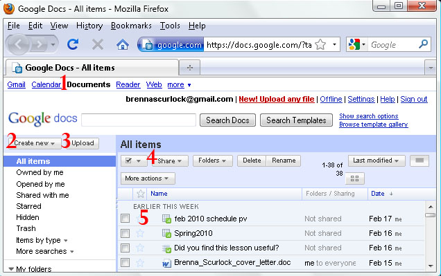

Part 1: Access your documents
This part is easy. To access your document storage area, click "Documents" on the top left navigation bar. Your documents area will open in a new tab.

This is what your documents area will look like. In this tutorial, you will be using the following features:
- Google account navigation bar Use these links to toggle between your documents, inbox, and other Google pages
- Create new document menu Use this drop-down menu to select a new Google Doc type
- Upload button This link will take you to the upload area, where you can select your own documents and files to upload and store
- Share documents menu Use this menu to choose how you want to share your documents and files with others
- Documents storage area This area, which appears similar to your email inbox, is where you can find all your stored documents and files